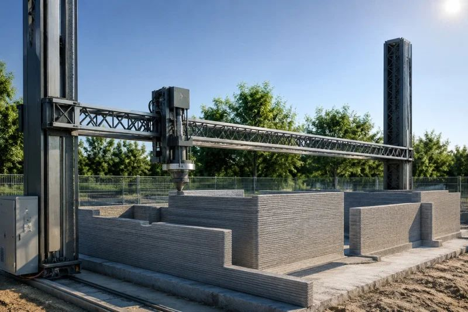

Найти проект и исполнителя
Подбор типового или индивидуального проекта, сбор предложений от строительных компаний, размещение заявки на строительство.
«СлойСтрой» объединяет заказчиков строительства, 3D-застройщиков, проектные организации и технические инструменты подготовки проектов к печати.
Технический сервис — отдельный маршрут для операторов и инженерных команд.

Каждая аудитория получает свой сценарий, понятные шаги и отдельный призыв к действию.
Подбор типового или индивидуального проекта, сбор предложений от строительных компаний, размещение заявки на строительство.
Профиль компании, описание оборудования и компетенций, получение запросов и подготовка коммерческих предложений.
Проверка модели, анализ ограничений, расчёт параметров и формирование технического отчёта для поддерживаемого оборудования.
Заказчик описывает задачу и получает подходящие варианты. Исполнитель уточняет исходные данные и формирует предложение. Технический модуль помогает проверить применимость проекта к выбранному процессу печати.
Посмотреть процессЦель, регион, тип объекта и пожелания.
Проекты, подрядчики и уточнение требований.
Предварительные сроки, стоимость и технические условия.
Договор, подготовка и выполнение работ.
Подберём подходящий сценарий обращения.